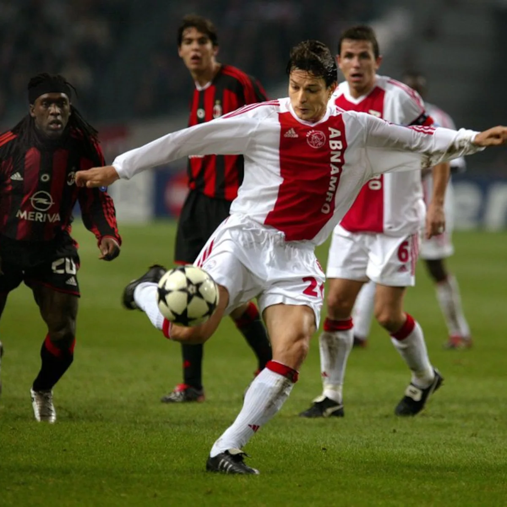

Jari Litmanen
Wie is Jari Litmanen?
Jari Litmanen is een voormalige Finse profvoetballer. Hij werd geboren op 20 februari 1971 in Lahti, Finland. In 2026 is hij 55 jaar oud.
Litmanen groeide op in een echte voetbal familie. Zijn vader, Olavi Litmanen, was ook voetballer en speelde onder andere voor Reipas en het Finse nationale elftal. Zijn moeder speelde ook voetbal. Daardoor kwam Jari al op jonge leeftijd veel met voetbal in aanraking.
Als kind speelde Litmanen bij Reipas in zijn geboortestad Lahti. Daar begon hij zijn jeugdopleiding en ontwikkelde hij zich steeds verder als voetballer. Hij maakte op jonge leeftijd al veel indruk met zijn techniek en inzicht.
In 1987 maakte hij zijn debuut in het eerste elftal van Reipas. Daarna speelde hij voor verschillende Finse clubs voordat hij in 1992 naar Ajax verhuisde. Bij Ajax groeide hij uit tot een wereldberoemde voetballer en werd hij vooral bekend door zijn nummer 10.
Jari Litmanen speelde tijdens zijn carrière onder andere voor Ajax, FC Barcelona en Liverpool. Zijn grootste successen behaalde hij bij Ajax. In 1995 won hij met Ajax de Champions League.
Naast zijn clubcarrière was Litmanen jarenlang een belangrijke speler van het Finse nationale elftal. Hij speelde 137 interlands voor Finland en maakte 32 doelpunten. Hij was ook lange tijd aanvoerder.
Waar woont Jari Litmanen nu?
Jari Litmanen woont tegenwoordig in Tallinn, de hoofdstad van Estland. Hij woont daar met zijn Estse vrouw. Hoewel hij in Estland woont, blijft hij sterk verbonden met Finland en Nederland, vooral door zijn tijd bij Ajax.
Waarom is hij zo bijzonder?
Litmanen wordt gezien als een van de beste voetballers die Finland ooit heeft voortgebracht. Hij stond bekend om zijn uitstekende techniek, inzicht, passing en gevoel voor doelpunten. Vooral bij Ajax werd hij een echte legende.
